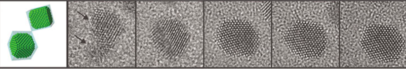

Report by Subjects
Report by Subjects
KAIST RESEARCH ACHIEVEMENTS
High-Resolution EM of Colloidal Nanocrystal Growth Using Graphene Liquid Cells
Department of Materials Science and Engineering
Jeong Yong Lee
Summary
The technology using the graphene liquid cell (GLC) is expected to study nanomaterials synthesis and various catalytic reactions in liquids, the reactions between electrolytes and electrodes in batteries. Moreover, it can be applied to observe reaction processes that take place within cells in the human body, animals or plants at the atomic level and analyze the reaction mechanisms, thus it can make human life more prosperous.
R&D Report
The technology using the graphene liquid cell (GLC) is expected to study nanomaterials synthesis and various catalytic reactions in liquids, the reactions between electrolytes and electrodes in batteries. Moreover, it can be applied to observe reaction processes that take place within cells in the human body, animals or plants at the atomic level and analyze the reaction mechanisms, thus it can make human life more prosperous.
In this work, we have succeeded in observing the nanocrystal growth in liquids based on entrapment of a liquid specimen between layers of graphene using in situ transmission electron microscopy (TEM) for the first time in the world. It has been impossible to image liquid samples in TEM under high vacuum conditions because of evaporation so far. However, we have employed this technique to explore the mechanism of colloidal Pt nanocrystal growth at the atomic level.
Substances that exist in the world can be largely divided into solid, liquid, and gas phases. Among them, the only specimen with a solid phase have been observed using TEM. On the other hand, the observation of a specimen in liquid itself or containing liquids was impossible due to the high vacuum environment in TEM. However, numerous scientific phenomena are the reactions occurring in the liquid or liquid-containing phase. Therefore, if the reactions in liquids are possible to observe at the atomic level, it can be a great contribution to understand the mechanisms of the numerous phenomena unknown up to now.
Atomic level resolution imaging of liquid nanocrystals
 Figure 1. In-situ HRTEM images of Pt nanocrystal growth at the atomic scale. (Science, 336, 61 (2012))
Prior to this study, we first discovered by transmission electron microscopy (TEM) that gold nanoparticles in the sealed graphene membranes have changed to liquids but the liquids do not evaporate in the vacuum from the study using graphene to create gold particles with various structures (Nano Lett., 11, 3290 (2011)). Inspired by these findings, the experiment was started to put liquid samples instead of gold nanoparticles within the graphene sheets to observe by TEM. We have succeeded to encapsulate the liquid samples of colloidal solution containing the platinum precursor using a relatively easy way of stacking two sheets of graphene faced, moistening with the liquid samples and suctioning out the extra solution for the first time in the world. Using the tens of nm sized graphene liquid cell (GLC) prepared by this method, the initial formations of platinum nanoparticles and the growth processes were observed in real time with atomic resolution. Figure 1 shows in situ high-resolution TEM (HRTEM) images of platinum nanocrystal growth at the atomic level by irradiating the electron beam to solution of platinum nanoparticles. As shown in the figure, crystallization of nanoparticles taking place within liquids may be observed clearly in real time. Figure 1 shows the arrangement of the platinum atoms (white contrast) during platinum nanocrystal growth. Namely, this is the first study to observe the atomic arrangement within liquid samples. We observed that the freely moving nanocrystals merged when they collide at {111} planes and coalescence events did not occur on contact of different planes of nanocrystals. This result is notable, because {111} planes of a face-centered cubic (fcc) crystal have the lowest surface energy.
Research Funding
This work was supported by Priority Research Centers Program through the National Research Foundation of Korea(NRF) funded by the Ministry of Education, Science and Technology(2011-0031407).
Research Results
This research was published in the April 6, 2012 issue of Science, and it was introduced as Research Highlights in Nature, the top article of This Week in Science, and Perspectives in Science. In addition, it was reported in the top news of BBC News Science & Environment, Korean internal 8 TV broadcasters (KBS, MBC, SBS, etc), and 37 newspapers (Joongang Ilbo, Donga Ilbo, etc).